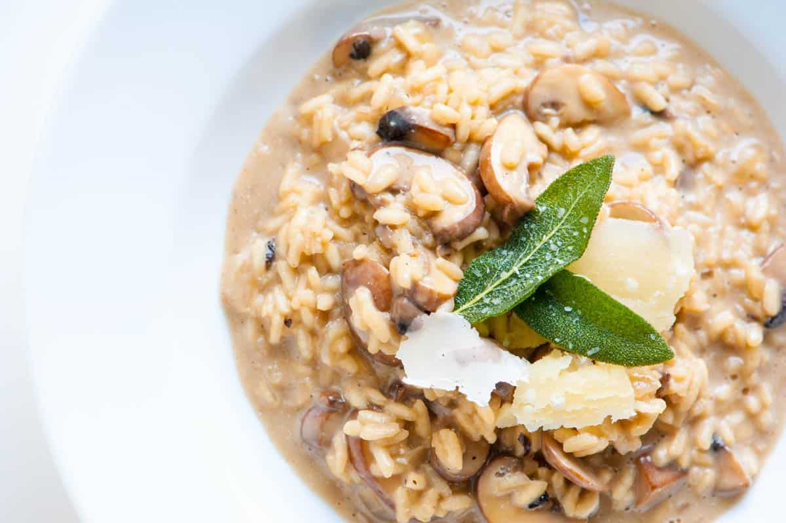

Mushroom Risotto

Description
This is the love of my life's best home cooked meal. Sally makes this for me all the time and i love it. Yum Yum
By following this recipe you too can find the love of your life
Ingredients
- 1 Tbs. butter
- 2 Tbs. olive oil
- 3 cloves garlic, finely chopped
- Half brown onion, diced
- 15 small mushrooms (or 6 large mushrooms), chopped
- 1 cup. aborio rice
- 300 ml. white wine *opptional
- 5 cups. chicken stock, warmed
- 100 g. parmesan, finely grated
- Small bundle of parsely, chopped
Steps
- Bring a large flat bottom pan (preferably non stick) to medium heat. Once warm add butter and oil
- Once melted, sautee garlic and onion until translucent
- Add mushrooms to pan and cook until slightly smaller
- Add rice, and fry off for 90 seconds. Stirring constantly
- Add wine and continue stirring continuously until all wine is absorbed and alcohol smell is gone
- Once wine is absorbed, add warm stock one ladel at a time, stirring constantly. Insuring stock is well absorbed before adding more
- Once all stock is used. taste the risotto, if rice is cooked, skip next step.
- Add extra water one ladel at a time until rice is cooked
- Turn off the heat, stir in Parmesan and Parsley until creamy
- Serve in bowls and top with any extra parsely or parmesan
- Watch the person next to you fall in love!
Home